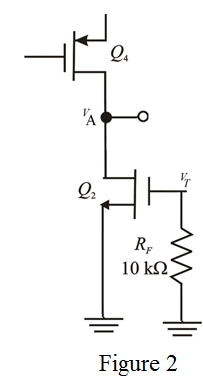

Refer to the circuit diagram of the feedback trans-conductance amplifier (series – series) in Figure P10.52 in the textbook.
Break the loop at the base of transistor  of the Figure.
of the Figure.
Refer to the circuit diagram of the feedback trans-conductance amplifier (series – series) in Figure P10.52 in the textbook.
Break the loop at the base of transistor of the Figure.
Define loop gain of the trans-conductance amplifier.
Here
 is the test signal applied.
is the test signal applied.
is the returned voltage.
From the figure, test voltage  is,
is,

Define feedback factor.
Define open loop gain.
Consider the portion of the circuit.

The voltage gain of the circuit is,
The voltage at node  is,
is,
From the circuit, voltage is nothing but  .
.
Substitute for  in the equation.
in the equation.
Recall the definition of the loop gain of the amplifier.
Substitute for and  for in the equation.
for in the equation.
Thus, loop gain of the amplifier  is .
is .